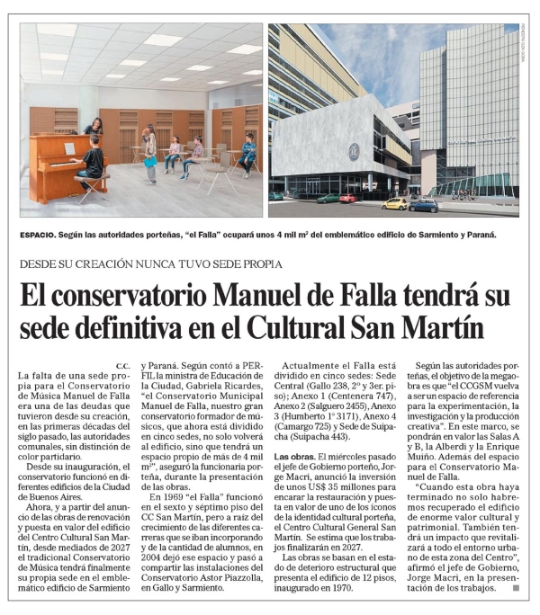

06/04/2025 Perfil - Nota - Sociedad - Pag. 49
06/04/2025 Perfil - Nota - Sociedad - Pag. 49
de sde su creación nunca tuvo sede propia
El conservatorio Manuel de Falla tendrá su sede definitiva en el Cultural San Martín
c.c.
La falta de una sede propia para el Conservatorio de Música Manuel de Falla era una de las deudas que tuvieron desde su creación, en las primeras décadas del siglo pasado, las autoridades comunales, sin distinción de color partidario.
Desde su inauguración, el conservatorio funcionó en diferentes edificios de la Ciudad de Buenos Aires.
Ahora, y a partir del anuncio de las obras de renovación y puesta en valor del edificio del Centro Cultural San Martín, desde mediados de 2027 el tradicional Conservatorio de Música tendrá finalmente su propia sede en el emblemático edificio de Sarmiento y Paraná. Según contó a PERFIL la ministra de Educación de la Ciudad, Gabriela Ricardes, "el Conservatorio Municipal Manuel de Falla, nuestro gran conservatorio formador de músicos, que ahora está dividido en cinco sedes, no solo volverá al edificio, sino que tendrá un espacio propio de más de 4 mil m2", aseguró la funcionaria porteña, durante la presentación de las obras.
En 1969 "el Falla" funcionó en el sexto y séptimo piso del CC San Martín, pero a raíz del crecimiento de las diferentes carreras que se iban incorporando y de la cantidad de alumnos, en 2004 dejó ese espacio y pasó a compartir las instalaciones del Conservatorio Astor Piazzolla, en Gallo y Sarmiento. Actualmente el Falla está dividido en cinco sedes: Sede Central (Gallo 238, 2º y 3er. piso); Anexo 1 (Centenera 747), Anexo 2 (Salguero 2455), Anexo 3 (Humberto 1° 3171), Anexo 4 (Camargo 725) y Sede de Suipacha (Suipacha 443).
Las obras. El miércoles pasado el jefe de Gobierno porteño, Jorge Macri, anunció la inversión de unos US$ 35 millones para encarar la restauración y puesta en valor de uno de los íconos de la identidad cultural porteña, el Centro Cultural General San Martín. Se estima que los trabajos finalizarán en 2027.
Las obras se basan en el estado de deterioro estructural que presenta el edificio de 12 pisos, inaugurado en 1970. Según las autoridades porteñas, el objetivo de la megaobra es que "el CCGSM vuelva a ser un espacio de referencia para la experimentación, la investigación y la producción creativa". En este marco, se pondrán en valor las Salas A y B, la Alberdi y la Enrique Muiño. Además del espacio para el Conservatorio Manuel de Falla.
"Cuando esta obra haya terminado no solo habremos recuperado el edificio de enorme valor cultural y patrimonial. También tendrá un impacto que revitalizará a todo el entorno urbano de esta zona del Centro", afirmó el jefe de Gobierno, Jorge Macri, en la presentación de los trabajos.
| #19460749 Modificada: 06/04/2025 04:41 |
Superficie art�culo: 447.58 cm²
Cotización de la nota: $608.262 Audiencia: 20.360 |
